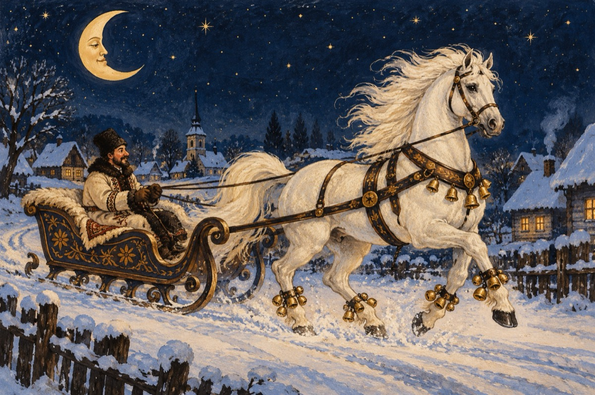

Cumătru’ Jan
Avea cumătru Jan în sat
O sanie cu-n cal adevărat
Căpăstru hamul nou pe el
Nu mai vorbesc de sanie, model!
Cu tălpile precum o pipă
Și coșul saniei ce se coboară, se ridică
Cu instalație de semnalizare
Și hățuri cum volanul la motoare.
Iar calul în mândria sa
Cu mersul țanțoș în continuu necheza
Cumătru cu țigara-n colț de gură
Trăgea câte-o dușcă din băutură
Mândria calului se pare
Era că-avea zurgălăi la picioare
Și zgomotul pe caldarâm se auzea
Cum la distracție fanfara ar cânta
Ăsta e cumătru Jan în sat
Un om la locul lui, e-adevărat
Calul însă are un nărav luat
La orice iapă el nechează neapărat
E cal ca orice cal, sadea!
Cumătru Jan ar fi grozav
De n-ar mai bea
Asta pentru el este destul de grav!
Vasile Groza